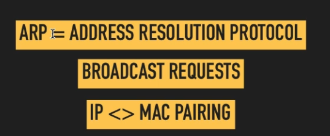
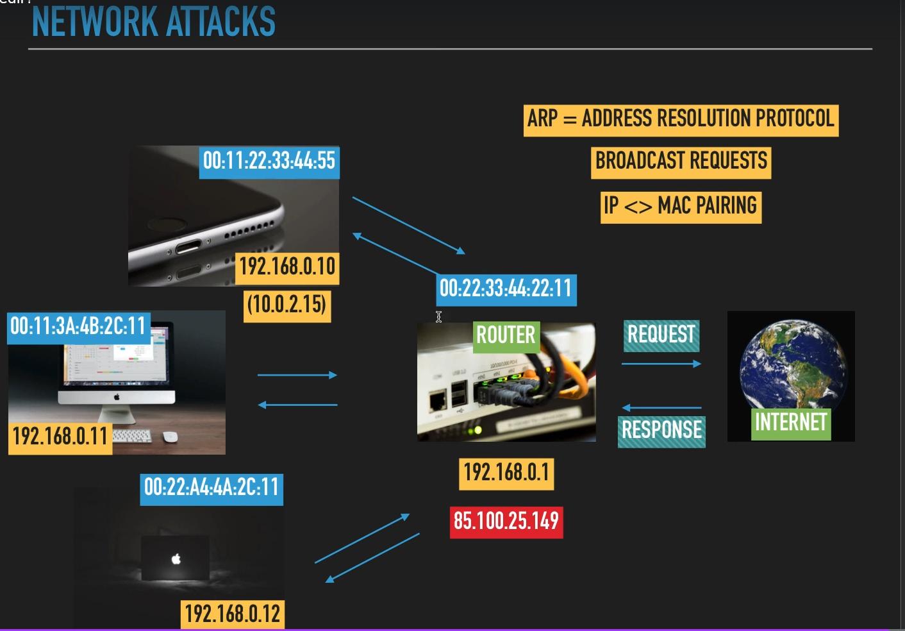

ARP
ARP = adres çözülmele protokolü
ARP; mac ve ip adreslerini eşleştirmek arp paketi kullanılır. Bunu da şu şekilde yapıyoruz;
Bulunduğumuz ağ içinde ip adresi ile bir broadcast (yayın) yapıyoruz ve o IP adresine sahip cihazda bize MAC adresini geri döndürüyor. Böylelikle, arp sayesinde ip ve mac adresleri eşleştirilmiş oluyor.
